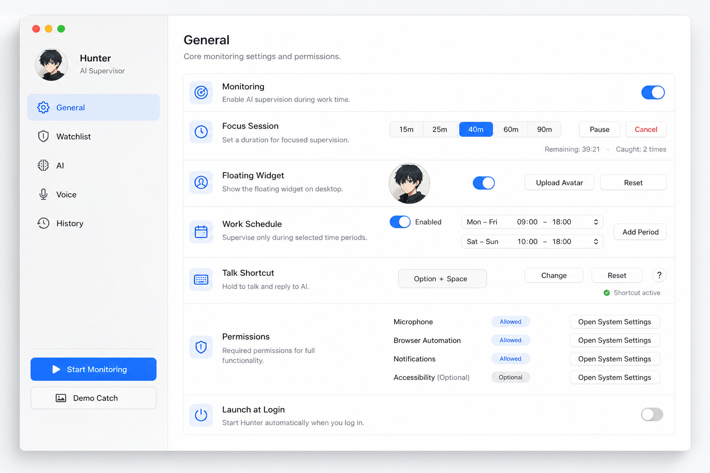
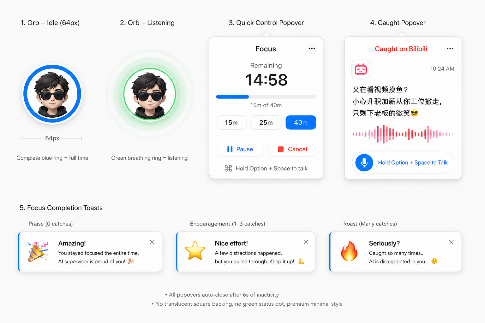
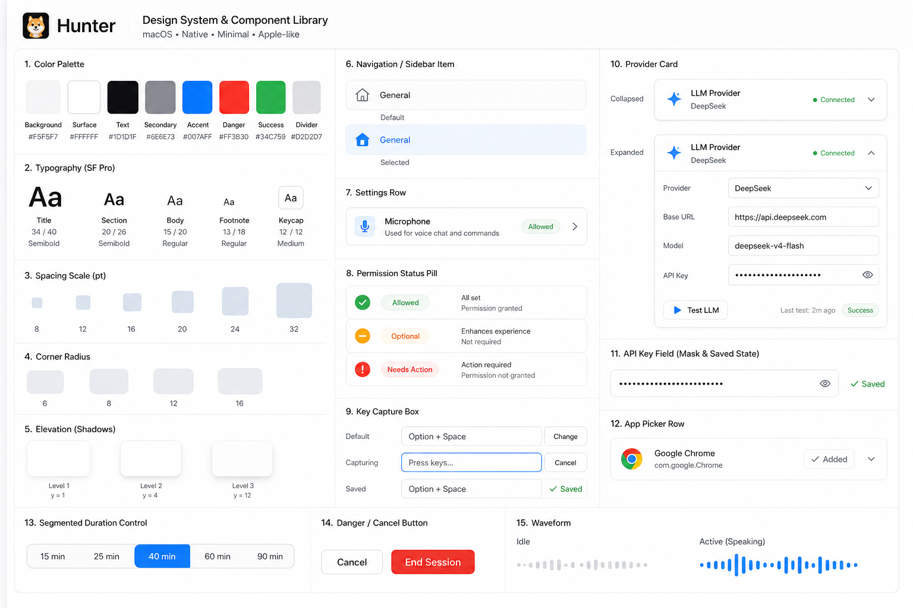

Settings Window

Generated visual references for the macOS-native settings window, floating widget states, and shared component system. PRD section 2A remains the source of truth.



| PRD Surface | Design Reference | SwiftUI Implementation |
|---|---|---|
| Floating Orb / Quick Control / Catch Popover / Focus Toast | floating-widget-reference.png |
FloatingOverlayView, QuickControlMenu, FloatingMascotIcon |
| Settings / General | settings-window-reference.png, component-board-reference.png |
SettingsView, GeneralPanel, SettingCard, PermissionRow |
| Settings / Watchlist | component-board-reference.png |
WatchlistPanel, InstalledAppPickerRow |
| Settings / AI Providers | component-board-reference.png |
ProvidersPanel, ProviderEditor |
| Settings / Voice and History | settings-window-reference.png, shared component tokens |
VoicePanel, HistoryPanel, StatPill |